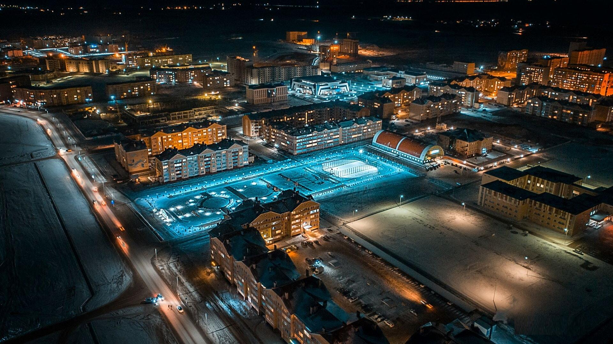
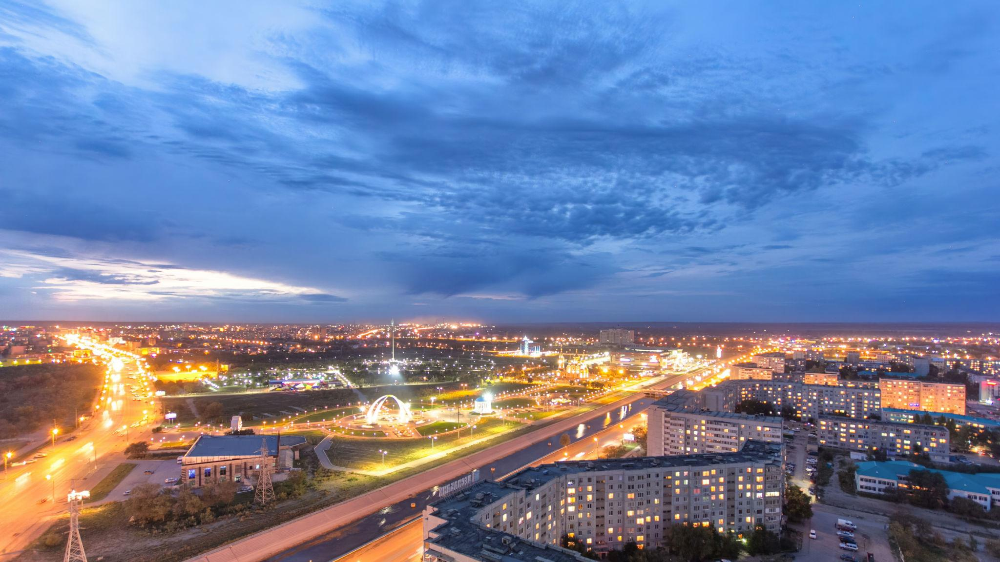
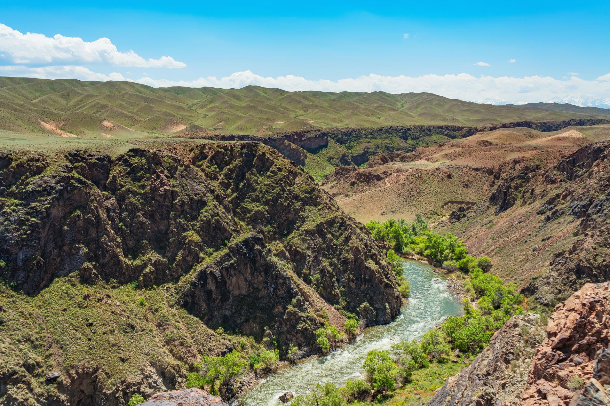
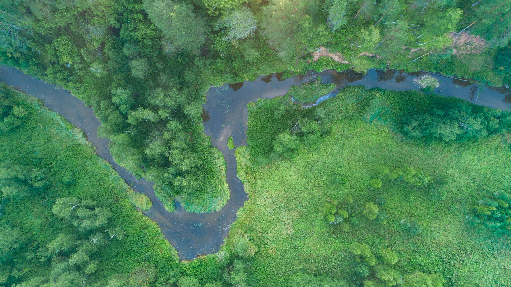
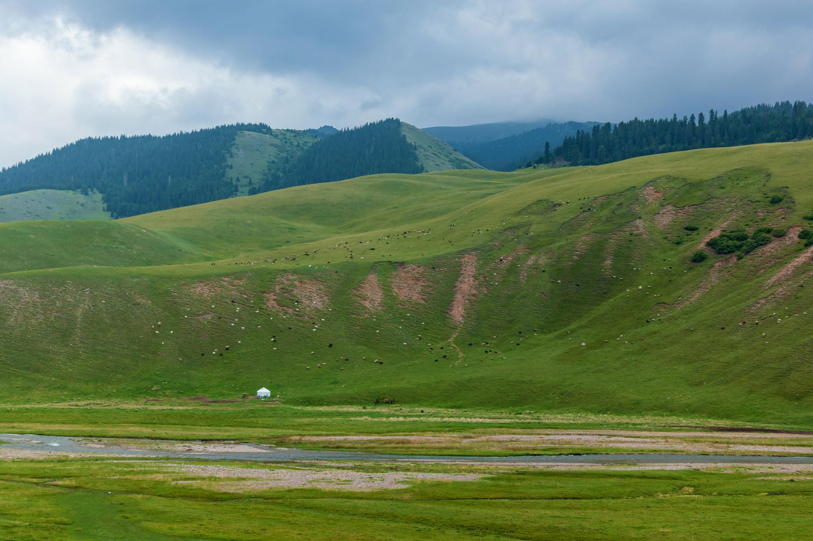
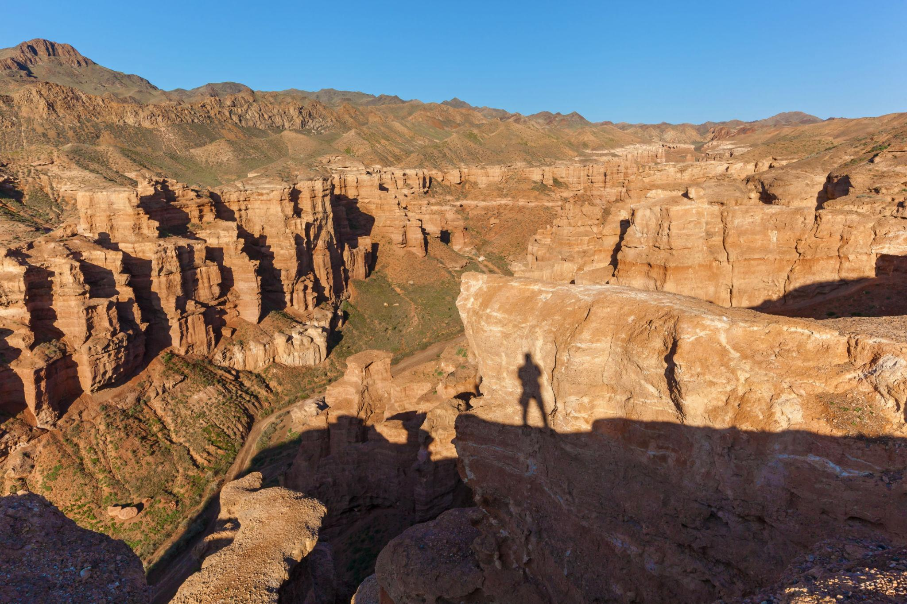

01
Ночной Актобе
Город раскрывается через сеть огней, дорог и кварталов. С высоты хорошо видно, как современная застройка постепенно переходит в открытое степное пространство.
Природа Актобе
Актобе соединяет городские огни, широкую степь, каньоны и зелёные речные долины. Эта подборка показывает разные стороны региона: от ночного города до тихих природных ландшафтов.

Город раскрывается через сеть огней, дорог и кварталов. С высоты хорошо видно, как современная застройка постепенно переходит в открытое степное пространство.

Сухие породы и резкие тени создают выразительный рельеф. Такие места показывают древний характер земли и силу природной эрозии.

Мягкие линии холмов, пастбища и прохладный воздух создают спокойный образ степной природы. Здесь особенно заметна открытость пространства.

Сверху река выглядит как живая линия среди густой зелени. Вода формирует островки, изгибы и влажные участки, где природа становится особенно насыщенной.

Быстрая вода проходит между каменными склонами и зелёными берегами. Контраст сухих гор и яркой растительности делает вид очень живым.

Закатный свет, городские магистрали и широкое небо показывают Актобе как город на границе степи и современной городской среды.